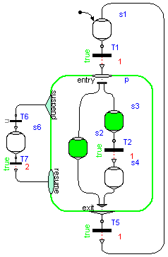 Library Modelica_StateGraph2 is a free Modelica package providing components to model discrete event, reactive and hybrid systems in a convenient way with deterministic hierarchical state diagrams. For convenience, the abbreviation "StateGraph2" will be often used for this library. An example model constructed with this library is shown in the figure to the right.
This library is inspired by Grafcet/Sequential Function Charts (SFC), Statecharts, Safe State Machines (SSM) and Mode Automata, and utilizes Modelica as action language. It has a similar modeling power as these formalisms, e.g. synchronization of parallel executing branches as in SFC (not easy in Statecharts), or suspending a hierarchical subgraph with one transition and resuming at the same states afterwards when entering it again, as in Statechart (not possible in SFC). A StateGraph2 model is always deterministic due to Modelicas "single assignment rule". Via special blocks in subpackage "Blocks", actions can be defined in a graphical way depending on the active step.
In order to construct a new state machine, exactly one instance of either "Step" or of "Parallel" must have parameter "initialStep = true". The "Parallel" component is both used as "composite step" (so only one branch), as well as "parallel step" (so several execution branches). The branches can be synchronized (if parameter use_outPort = true) or can run unsynchronized to each other (if parameter use_outPort = false).
For an introduction, have especially a look at:
This library is implemented with Modelica 3.1 and utilizes non-standard extensions to Modelica 3.1 as summarized here.
Licensed by DLR and Dynasim under the Modelica License 2
Copyright © 2003-2013, DLR and 2007-2009, Dynasim AB
This Modelica package is free software and the use is completely at your own risk; it can be redistributed and/or modified under the terms of the Modelica license 2, see the license conditions (including the disclaimer of warranty) here or at http://www.Modelica.org/licenses/ModelicaLicense2.
| Name | Description |
|---|---|
| User's Guide | |
| Examples to demonstrate the usage of the Modelica_StateGraph2 library | |
| Step (optionally with initial step and/or activePort) | |
| Transition between steps (optionally with delayed transition and/or condition input port) | |
| Transition to break loops by introducing an artificial time delay (immediately fire and then wait) | |
| Composite or parallel step | |
| Partial compont to construct a parallel submodel via inheritance | |
| Input/output blocks that are designed for StateGraph2 but shall be included in the Modelica Standard Library |
 Modelica_StateGraph2.Step
Modelica_StateGraph2.StepA Step is the graphical representation of a state and is said to be either active or not active. A StateGraph2 model is comprised of one or more steps that may or may not change their states during execution. The input port of a Step (inPort) can only be connected to the output port of a Transition, and the output port of a Step (outPort) can only be connected to the input of a Transition. An arbitrary number of input and/or output Transitions can be connected to these ports.
The state of a step is available via the output variable active that can be used in action blocks (e.g. "step.active"). Alternatively, via parameter "use_activePort" the Boolean output port "activePort" can be enabled. When the step is active, activePort = true, otherwise it is false. This port can be connected to Boolean action blocks, e.g., from Modelica_StateGraph2.Blocks.MathBoolean.
Every StateGraph2 graph must have exactly one initial step. An initial step is defined by setting parameter initialStep at one Step or one Parallel component to true. The initial step is visualized by a small arrow pointing to this step.
In the following table different configurations of a Step are shown:
Parameter setting Icon Description Default step 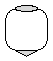 If the step is active, the public Step variable "active" is true otherwise, it is false. An active Step is visualized by a green fill color in diagram animation. use_activePort = true 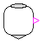 If the step is active, the connector "activePort" is true otherwise, it is false (the activePort is the small, violet, triangle at the rigth side of the Step icon). Actions may be triggered, e.g., by connecting block MultiSwitch to the activePort. initialStep = true 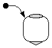 Exactly one Step or Parallel component in a StateGraph2 graph must have "initialStep = true". At the first model evaluation during initialization, "active" is set to true for the initial Step or the initial Parallel component, i.e., the respective component is activated.
The inPort and the outPort connectors of a Step are "vectors of connectors". How connections to these ports are automatically handled in a convenient way is sketched here in the tutorial.
| Name | Description |
|---|---|
| initialStep | =true, if initial step (graph starts at this step) |
| use_activePort | =true, if activePort enabled |
| Name | Description |
|---|---|
| inPort[nIn] | Port for zero, one, or more input transitions |
| outPort[nOut] | Port for zero, one, or more output transitions |
| activePort | = true if step is active, otherwise the step is not active |
 Modelica_StateGraph2.Transition
Modelica_StateGraph2.Transition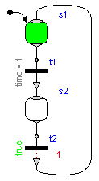 To define a possible change of states, a Transition is connected to the output of the preceding Step and to the input of the succeeding Step, see figure to the right, where Transition t1 defines the transition from Step s1 to Step s2. Note: A Transition has exactly one preceding and one succeeding Step. A Transition is said to be enabled if the preceding step is active. An enabled transition is said to be fireable when the Boolean condition defined in the parameter menu of the transition is evaluated to true. This condition is also called Transition condition and is displayed in the icon of the Transition (e.g., "time > 1" is the condition of Transition t1). When parameter use_conditionPort is set, the Transition condition is alternatively defined by a Boolean signal that is connected to the enabled conditionPort.
A fireable transition will fire immediately. In the figure to the right, t1 fires when s1 is active and time is greater than one, i.e., s1 becomes inactive and s2 becomes active. The firing of a transition can optionally also be delayed for a certain period of time defined by parameter "waitTime". See, e.g., t2 in the figure to right, that is delayed for one second before it may fire, given that the condition remains true and the preceding Step remains active during the entire delay time.
In the following table different configurations of a Transition are shown:
Parameter setting Icon Description Default transition 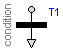 The transition fires when the preceding step is active and the expression "condition" in the parameter menu is true. use_conditionPort = true 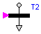 The transition fires when the preceding step is active and connector "conditionPort" is true. delayedTransition = true 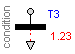 The transition fires after the delay time "waitTime" (here: 1.23 s), if the preceding step was active, and "condition = true" during the entire delay time. use_firePort = true 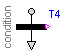 Connector "firePort" is true when the transition fires. Actions may be triggered, e.g., by connecting block MultiSwitch to the firePort. loopCheck = false
(in "Advanced" tab)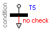 It is not checked whether the loop in which this Transition is used, has at least one delayed transition. Use this option only, if you are completley sure that infinite event looping is not possible in this loop. Consider to use LoopBreakingTransition instead!
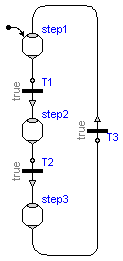 At an event instant, an iteration occurs, due to the Modelica semantics (= whenever a new event occurs, the model is re-evaluated). This means that Transitions keep firing along a connected graph, as long as the firing conditions are true. In principal, it is therefore possible that infinite event looping occurs. A simple example of this kind is shown in the figure to the right. Here, all Transition conditions are true and therefore all Transitions would fire forever at the initial time. This is, however, no valid StateGraph2 model and will result in a translation error, since it is required that a StateGraph2 model has at least one delayed Transition per loop. This means that one of T1, T2, or T3, must have parameter delayedTransition=true. Since event iteration stops at a delayed Transition, infinite event looping cannot occur. This also means that at one time instant every Transition can fire at most once and therefore the number of model evaluations at an event instant is bounded by the number of Transition components.
If you have to artifically introduce a delay time in order to fulfill the requirement above, it is recommended to use the special LoopBreakingTransition that is designed for this case.
Note, it is still possible that infinite event looping occurs due to model errors in other parts of the model. For example, if a user introduces an equation of the form "J = pre(J) + 1" outside of a when-clause, event iteration does not stop.
There are rare situations, where infinite event looping cannot occur even if there is no delayed transition in a loop. When you do not want to introduce an artifical time delay in a loop in this case, you can switch off the loop check by setting parameter "loopCheck = false" in the "Advanced" tab of the parameter menu of one Transition in this loop.
| Name | Description |
|---|---|
| use_conditionPort | = true, if conditionPort enabled |
| condition | Fire condition (time varying Boolean expression) |
| delayedTransition | = true, if transition fires after waitTime |
| waitTime | Wait time before transition fires (> 0 required) [s] |
| use_firePort | = true, if firePort enabled |
| Advanced | |
| loopCheck | = true, if one delayed transition per loop required |
| Name | Description |
|---|---|
| inPort | Input port of transition (exactly one connection to this port is required) |
| outPort | Output port of transition (exactly one connection from this port is required) |
| conditionPort | Fire condition as Boolean input. |
| firePort | = true, if transition fires |
 Modelica_StateGraph2.LoopBreakingTransition
Modelica_StateGraph2.LoopBreakingTransitionEvery loop in a StateGraph2 model needs to have at least one delayed transition. If this is not the case, a delay needs to be introduced at one transition of a loop. The "LoopBreakingTransition" is designed to replace an (immediate) Transition by a Transition that fires immediately, and then waits in an internal step for the defined delay time. The semantics is therefore slightly different if a Transition with "delayedTransition = true" is used. In the latter case, the transition only fires after the delay time and the fire condition must remain true during this time period.
A LoopBreakingTransition is just a convenient short hand notation for the combination of a Transition, a Step, and a delayed Transition as shown in the following table:
LoopBreakingTransition Equivalent system 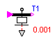 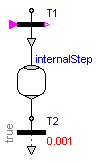
In the following table different configurations of a LoopBreakingTransition are shown:
Parameter setting Icon Description Default transition 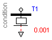 The LoopBreakingTransition fires when the preceding step is active and the expression "condition" in the parameter menu is true. After a "waitTime" (here: 0.001 s) the succeding step is activated. use_conditionPort = true 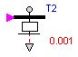 The LoopBreakingTransition fires when the preceding step is active and connector "conditionPort" is true. After a "waitTime" (here: 0.001 s) the succeding step is activated. use_firePort = true 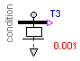 Connector "firePort" is true when the LoopBreakingTransition fires and the internal Step of this element is activated. Actions may be triggered, e.g., by connecting block MultiSwitch to the firePort.
| Name | Description |
|---|---|
| use_conditionPort | = true, if conditionPort enabled |
| use_firePort | = true, if firePort enabled |
| condition | Fire condition (time varying Boolean expression) |
| waitTime | Time to wait in internal step after transition fired [s] |
| Name | Description |
|---|---|
| inPort | Input port of transition (exactly one connection to this port is required) |
| outPort | Output port of transition (exactly one connection from this port is required) |
| conditionPort | Fire condition as Boolean input. |
| firePort | = true, if transition fires |
 Modelica_StateGraph2.Parallel
Modelica_StateGraph2.ParallelThis component acts both as a composite step (having just one branch) and as a Step that has parallel branches that are executed in parallel to each other. The details are summarized here in the tutorial. A typical example for the usage is shown in the next Figure (component "p"):
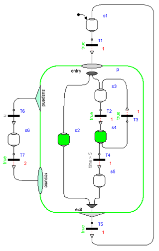
In the following table different configurations of a Parallel component are shown:
Extends from Modelica_StateGraph2.Internal.Interfaces.PartialParallelBase (Base class of a parallel component (including a composite step as special case)).
use_inPort=true
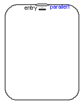use_inPort=true
use_outPort=true
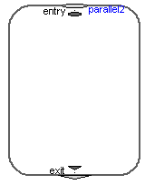use_inPort=true
use_suspend=true
use_activePort=true
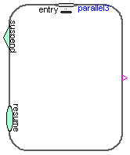initialStep=true
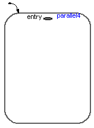
| Name | Description |
|---|---|
| initialStep | =true, if initial step (start state machine at entry ports of Parallel) |
| use_inPort | =true, if inPort enabled |
| use_outPort | =true, if outPort enabled |
| use_suspend | =true, if suspend and resume ports enabled |
| use_activePort | =true, if activePort enabled |
| Name | Description |
|---|---|
| inPort[nIn] | If enabled, port for one or more input transitions |
| outPort[nOut] | If enabled, port for one or more output transitions |
| suspend[nSuspend] | If enabled, port for zero, one or more suspend transitions |
| resume[nResume] | If enabled, port for zero, one or more resume transitions |
| entry[nEntry] | Entry port for one or more branches (Step or Parallel components must be connected to this port) |
| exit[nExit] | If enabled, synchronization port for one or more branches (Step or Parallel components must be connected to this port) |
| activePort | = true if Parallel component is active, otherwise it is not active |
 Modelica_StateGraph2.PartialParallel
Modelica_StateGraph2.PartialParallelThis is a variant of the Parallel component. The essential difference is that this is a "partial" model. It is therefore not allowed to drag it. The only purpose of this model is to inherit from it in order to construct a new model that is a special Parallel component.
The Figure below shows a component ("s2") built from a PartialParallel component. As the diagram and the icon layer of the PartialParallel component does not need to be the same size, the user can benefit from collecting large subsystems in smaller closed Parallel components to improve overview and modularization of the full system.
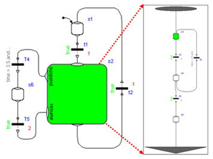Extends from Modelica_StateGraph2.Internal.Interfaces.PartialParallelBase (Base class of a parallel component (including a composite step as special case)).
| Name | Description |
|---|---|
| initialStep | =true, if initial step (start state machine at entry ports of Parallel) |
| use_inPort | =true, if inPort enabled |
| use_outPort | =true, if outPort enabled |
| use_suspend | =true, if suspend and resume ports enabled |
| use_activePort | =true, if activePort enabled |
| Name | Description |
|---|---|
| inPort[nIn] | If enabled, port for one or more input transitions |
| outPort[nOut] | If enabled, port for one or more output transitions |
| resume[nResume] | If enabled, port for zero, one or more resume transitions |
| suspend[nSuspend] | If enabled, port for zero, one or more suspend transitions |
| activePort | = true if Parallel component is active, otherwise it is not active |